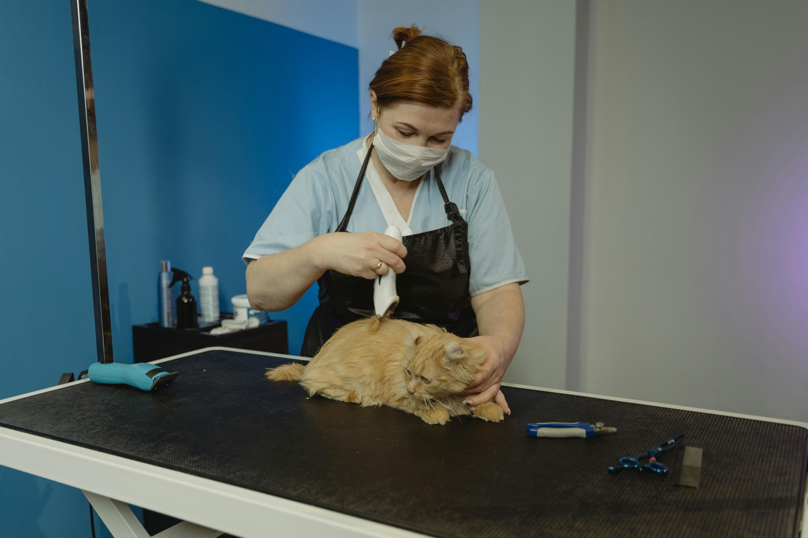

Sobre Nós
A Patinhas do Bem é uma ONG dedicada ao resgate e proteção de animais abandonados. Atuamos com amor, seriedade e transparência, garantindo cuidados veterinários, alimentação e muito carinho até que cada animal encontre um lar seguro.
Como Surgiu
A ideia da ONG surgiu em 2018, quando um grupo de amigos se uniu com a ideia de ajudar animais de rua.
Depoimentos

"Adotar com a Patinhas foi a melhor decisão da minha vida. A ONG me deu total suporte."
- Carla, adotante
"Me emociona ver o trabalho da equipe. Amor e cuidado em cada resgate."
- Bruno, voluntário Ana Luiza
Ana Luiza
 João Pedro
João Pedro

Marina Alves